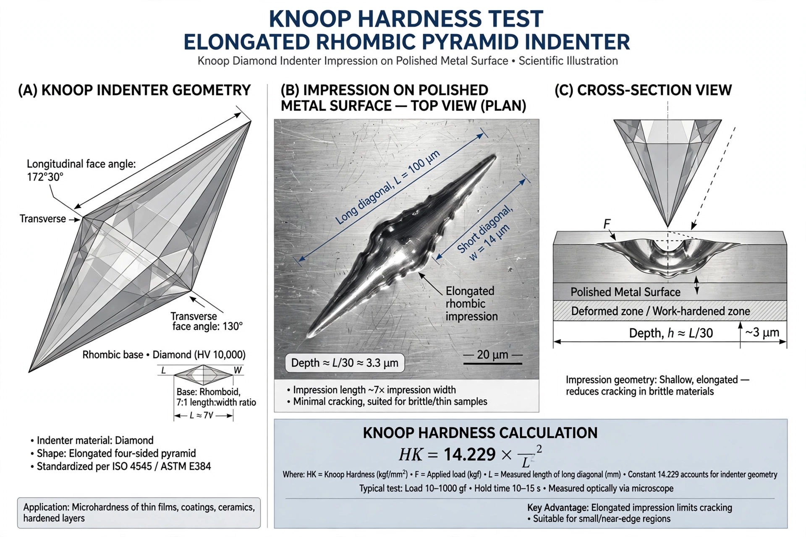

| Knoop hardness test | |
|---|---|
 The elongated Knoop indentation (not to scale) | |
| Developed | 1939, by Frederick Knoop and colleagues, U.S. National Bureau of Standards |
| Indenter | Elongated rhombic-based pyramidal diamond |
| Measured | Length of the long diagonal of the impression |
| Typical loads | Microhardness range, grams to ~1 kgf |
| Standards | ASTM E384; ISO 4545 |
The Knoop hardness test is a microhardness test — a method for measuring the mechanical hardness of a material, used especially for very brittle materials and thin sheets or coatings — in which a point-shaped diamond indenter is pressed into a polished specimen surface under a controlled load, and the size of the resulting impression is measured.
The test was developed in 1939 by Frederick Knoop, C. G. Peters and W. Emerson at the United States National Bureau of Standards (now NIST). It is the principal competitor and complement of the Vickers hardness test in the microhardness regime.
The Knoop indenter is a diamond ground to an elongated rhombic-based pyramid. The included angles are 172°30′ along the long direction and 130° across, so the indentation it leaves is a long, shallow rhombus whose long diagonal is about seven times its short diagonal and roughly thirty times its depth. Because the impression is so shallow, the test can be applied to thin layers, case-hardened surfaces and individual microstructural constituents (grains, phases, inclusions) within a polished sample.
The Knoop hardness number (HK) is the load divided by the projected area of the indentation:
HK = P / (Cp · L²)
where P is the applied load, L is the measured length of the long diagonal, and Cp ≈ 0.070279 is a constant set by the indenter geometry — the projected area of the impression is CpL². With P in kilograms-force and L in millimetres, HK has the same units (kgf/mm²) as the Vickers number, and for many materials the two scales are approximately equal at moderate hardness values. Results are reported in the form "HK 250" together with the load used, e.g. HK0.5.
The long diagonal gives good measurement precision at very low loads, because small errors in reading the diagonal length produce smaller relative errors than in the nearly square Vickers impression. The shallow impression minimises damage, an advantage for brittle ceramics, glass and minerals that crack under larger indenters. The elongated shape also allows indentations to be placed close together in rows, which is convenient for mapping hardness gradients across welds, diffusion zones and case-hardened layers.
Limitations include the need for a carefully polished, flat surface; sensitivity to elastic recovery, which distorts the short diagonal (the method assumes recovery affects the long diagonal negligibly); and anisotropy — the measured hardness of a single crystal or a textured material can depend on the orientation of the long diagonal relative to the crystal axes.
Knoop testing is widely used for ceramics and glass, dental materials, thin films and hard coatings, semiconductor materials, and the individual phases of alloys and minerals in geology and failure analysis. Frederick Knoop's method remains, with the Vickers test, one of the two standard microindentation hardness methods specified in ASTM E384 and ISO 4545.